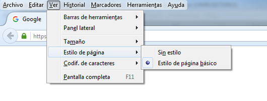

Los archivos utilizados en este tema son:
vinculos_css.htmlcss/estilos.csscss/estilo_preferred.csscss/estilos_alt1.cssA continuación se muestran dos <div> uno sin estilo y debajo con estilo que se ha declarado en <head> como contenido de <style>
IMPORTANTE: para probar este apartado es necesario utilizar Firefox o Internet Explorer ya que permiten escoger hojas de estilo alternativas
La siguiente imagen muestra como escoger estilos preferentes y alternativos en Firefox:
Observa el contenido de la siguiente caja e interactúa con él cambiando los estilos. Los códigos de colores de más abajo te ayudarán a entender qué CSS y sobre qué esta actuando.
Un bonito párrafo
Otro bonito párrafo con la clase .parrafop definida en css/estilos.css
Y otro párrafo más, esta vez con la clase .parrafo definida en css/estilos.css,css/estilo_preferred.css y en css/estilo_alt1
Código de colores:
body)Permiten aplicar un estilo CSS a un elemento HTML concreto utilizando el atributo style.
El uso de esta vinculación está desaconsejado por hacer más difícil entender el código HTML e implica una mala optimización de la web.
un ejemplo, el código utilizado para dar estilo al siguiente <div>:
<div class="csspre" style="color: blue; font-size: 1.3em; background-color: #eee; border: 1px solid black;">
Utilizando @import podemos vincular una hoja de estilo externa desde la etiqueta <style> o desde otra hoja de estilo externa.
La única condición que se ha de cumplir para que funcione es que no haya ninguna regla de estilo por encima de la línea de @import.
Ejemplo de uso:
<style>
@import url("dirección url") medio1, medio2, ... medioX;
selector {
propiedad: valor;
...
}
...
</style>
medioX hace referencia al medio al que se va a aplicar el estilo importado: impresión (print), proyector (projection), televisión (tv)
El uso de esta técnica no es recomendable. Una razón es porque ralentiza la carga de la página al realizar varias peticiones al servidor. Es preferible utilizar <link>.